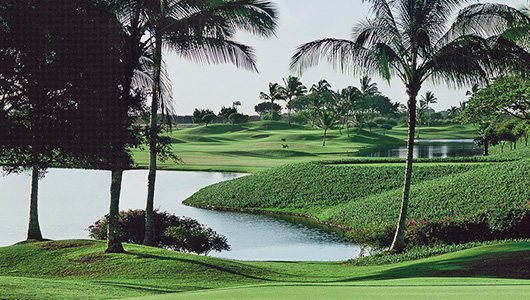

그렉노먼, 아니카 소렌스탐 등 전설의 챔피언들이 우승한 골프 클럽
80여 개의 벙커가 골퍼들의 승리욕을 자극하는 골프 코스
하와이의 많은 골프 코스 중 No. 5안에 선정되는 카폴레이 골프 클럽은 테드 로빈슨이 설계한 오아후섬 최상급 코스 중 하나이다.
그렉노먼, 아니카 소렌스탐 등 전설의 챔피언들이 우승을 거머쥔 챔피언십 코스이며 LPGA 슈퍼스타, 미셸 위가 출연한 ‘하와이 5-0’의 촬영지로도 잘 알려진 골프 클럽이다.

2012-2014 PGA 챔피언스 투어 ‘퍼시픽링스 챔피언십’, 1996-2001 LPGA ‘레이디스 하와이안 오픈’을 비롯해 다양한 국제 대회를 개최한 챔피언십 코스로, 765,000sqm의 광활한 사탕수수밭을 개간하여 수천 그루의 야자수와 열대림을 조성하고 다양한 규모의 연못 다섯 개와 언덕, 인공 연못 등을 넣어 자연미를 자랑하고 있으며, 특히 대담한 조경이 골퍼들의 시선을 사로잡는다.
경사진 언덕과 연못들 사이로 조성된 80여 개의 벙커가 난이도를 끌어올리고, 언듈레이션이 많은 페어웨이와 그린을 막아선 숲, 연못 등 장애물들로 코스 공략하는데 신중을 요한다. 홀마다 티를 선택할 수 있어 다양한 골퍼들이 레벨에 맞는 티를 선택하여 플레이할 수 있는 것이 특징이다.
Travel Tip
하와이의 상징인 와이키키 해변과 각종 쇼핑은 물론 미술관, 동물원, 아쿠라이움 등 다양한 문화 활동을 즐길 수 있는 호놀룰루 지역까지 차량으로 30분이면 닿을 수 있으며, 호놀룰루 국제공항과도 가까워 접근성과 편리성을 겸비하고 있다.